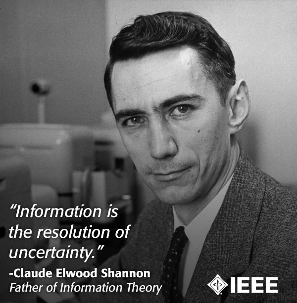

克劳德·艾尔伍德·香农（英语：Claude Elwood Shannon，1916年4月30日－2001年2月24日），美国数学家、电子工程师和密码学家，被誉为信息论的创始人。香农是密歇根大学学士，麻省理工学院博士。
香农出生于密歇根州的Petoskey。父亲克劳德（1862–1934）与他的姓名完全相同，是新泽西州早期移民的后裔，曾自主创业经商，也担任过审核遗嘱的法官。母亲玛贝尔·沃夫·香农（1890–1945）是德国移民的女儿，职业是语言学教师，曾长期担任密歇根州Gaylord高中的校长。
香农人生的前16年都是在Gaylord度过的，他在那儿接受了公立学校教育，并于1932年从Gaylord高中毕业。香农对机械和电气电子表现出了极大爱好。他最优秀的学科就是科学和数学，并在家中制作了模型飞机、无线电控制的模型船和一个可与半英里内的朋友家联系的无线电报系统。大一点的时候，他做过西联汇款的投递员。